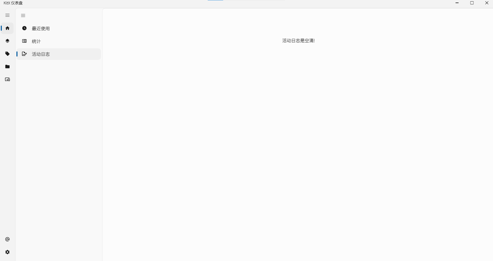
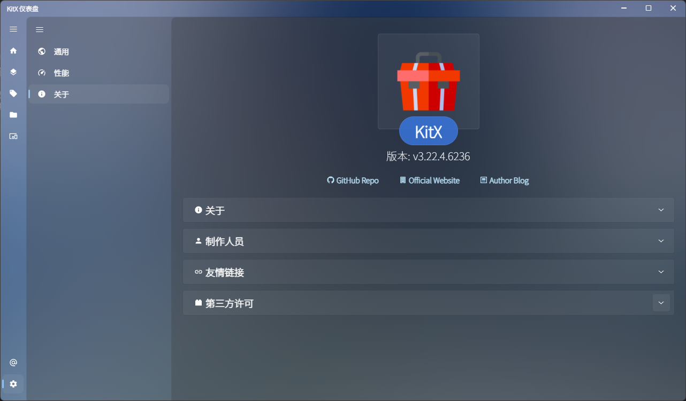
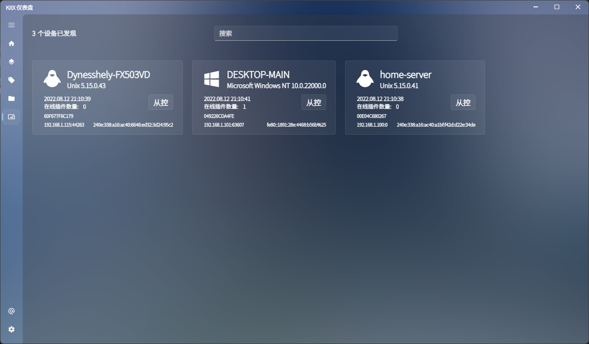
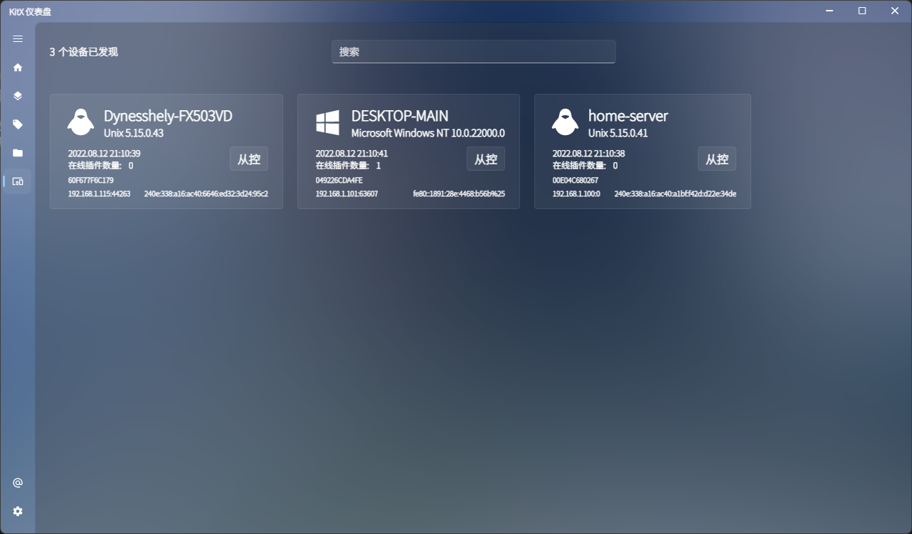

💻
Support OS
📢
Info

🗒
Status


📧
Social


应用简介
KitX 是一个开放, 共享, 免费的工具平台. 允许开发者(第三方)以任何受支持的语言, 框架为这个平台增添功能.
最终用户可以从市场中自由下载免费插件或是购买付费插件来搭建符合自己工作流的快捷自动化环境.
基于 KitX 的三层设计, 使得最终用户可以轻易在终端场景中进行不同设备间的流转与同步, 也可以轻松进行终端场景中的多设备协同.
同样得益于优秀的三层设计, 第三方可以使用自己熟悉的语言, 框架来工作, 同样可以很轻松将旧有的代码进行迁移, 甚至可以保持旧有逻辑的同时支持 KitX 平台.
术语解释
开发者(第三方) => 指为 KitX 平台开发插件, 新功能或是更新旧有代码使之支持 KitX 平台的开发者们.
受支持的语言, 框架 => 取决于第一方开发者(即我们)为 KitX 开发了哪些 Loader (三层设计中的一层).
最终用户 => 指在终端设备安装 KitX 来使用 KitX 平台以及社区功能并搭建符合自己工作流的用户.
市场 => KitX 当然支持旁加载, 但市场是一个更加方便, 有组织, 安全的插件获取平台(KitX Marketplace).
工作流 => KitX 所有的插件支持管道消息, 可以在插件间进行任务流动, 以达到插件间协作的目的.
快捷自动化环境 => KitX 的任务计划模块允许用户设定触发条件, 触发钩子等使工作流自动化.
三层设计 => 见下方应用架构部分.
终端场景 => 最终用户具体使用 KitX 平台的具体场景, 某些语境下指最终用户的局域网环境.
多设备协同 => KitX Dashboard (三层设计中的一层) 目前已支持的系统参见下方运行要求部分.
第三方 => 同上开发者(第三方).
应用架构
KitX 采用了三层设计
第三方开发 =--> Plugins <--= 互操作=--> Loaders <--= Socket 通信=--> Dashboard <--= UI 操作=--> 用户
第三方负责参照文档实现 Plugin 应该实现的接口, 具体如何实现每种语言不同框架以及选择实现的 Loaders 都不同.
每种语言或者说框架都会有一个对应的 Loader 来实现与 Plugin 的互操作, 而 Loader 与 Dashboard 通过 Socket 通信, 汇报情况以及传递命令.
而这三层设计中的每一层都是可以替换的, 任何一层都可以自定义或是采用第三方的解决方案.
如此一来, 局域网中的其它设备上的插件也可以连接到当前设备, 因此可以实现局域网互联.
运行要求
KitX Dashboard (面向最终用户)
系统支持
桌面端支持: Windows (10, 11) x64, Linux x64, MacOS x64
移动端支持: Android (7+) arm, iOS (12+) arm
环境支持
桌面端支持
Windows: 可选 带环境 , 与 不带环境 的便携版, 以及 在线安装包 和 离线安装包.
Linux: 可选 带环境 的便携版, 也可以在 snap 中在线安装, 或者使用 .deb .rpm 包进行安装.
MacOS: 可选 带环境 的便携版, 也可以在 App Store 中在线安装.
移动端支持
Android: 可选 .apk 直接安装, 以及 Crequency Hub 中在线安装.
iOS: 可选 App Store 中在线安装.
运行截图
  

更新周期
| Version | Info | Code | Support | Term | Require | Runs on |
|---|---|---|---|---|---|---|
| Beta_10016 | Beta | Beta1 | [x] | 0 | .Net Framework 4.8 | Windows |
| Beta_10213 | Beta | Beta2 | [x] | 0 | .Net Framework 4.8 | Windows |
| Beta_10235 | Beta | Beta3 | [x] | 0 | .Net Framework 4.8 | Windows |
| v1.0.0 | Release | Hello | [x] | 0 | .Net Framework 4.8 | Windows |
| v1.0.4 | Release | WoW | [x] | 0 | .Net Framework 4.8 | Windows |
| v1.0.5 | Release | Nice Try | [x] | 0 | .Net Framework 4.8 | Windows |
| v1.1.0 | Release | Apple | [x] | 0 | .Net Framework 4.8 | Windows |
| v1.1.1 | Release | Banana | [x] | 0 | .Net Framework 4.8 | Windows |
| v1.1.2 | Release | Cabbage | [x] | 0 | .Net Framework 4.8 | Windows |
| v1.1.4 | Release | Durin | [x] | 0 | .Net Framework 4.8 | Windows |
| v1.1.5 | Release | Grape | [x] | 0 | .Net Framework 4.8 | Windows |
| v1.2.0 | Release | Herring | [x] | 0 | .Net Framework 4.8 | Windows |
| v1.2.1 | Release | Wonderful | [x] | 0 | .Net Framework 4.8 | Windows |
| v1.2.2 | Release | Abandon | [x] | 0 | .Net Framework 4.8 | Windows |
| v1.2.4 | Preview | Panda | [x] | 0 | .Net Framework 4.8 | Windows |
| v1.2.4 | Release | Panda | [x] | 0 | .Net Framework 4.8 | Windows |
| v1.2.5 | Release | Orange | [x] | 0 | .Net Framework 4.8 | Windows |
| v1.2.6 | Release | Muik | [x] | 0 | .Net Framework 4.8 | Windows |
| v1.2.7 | Release | Cookie | [x] | 0 | .Net Framework 4.8 | Windows |
| v2.0.0 | Release | Sea | [x] | 0 | .Net Framework 4.8 | Windows |
| v2.0.1 | Release | Ocean | [x] | 0 | .Net Framework 4.8 | Windows |
| v2.0.2 | Release | Calculator | [x] | 0 | .Net Framework 4.8 | Windows |
| v2.0.4 | Release | Computer | [x] | 0 | .Net Framework 4.8 | Windows |
| v2.0.5 | Preview | Laptop | [x] | 0 | .Net Framework 4.8 | Windows |
| v3.22.04.6230 | Preview | Telegram | [v] | 2022.04 -> 2023.04 | .Net 6 (Also Self-Contained) | Windows, Linux, MacOS, Android, iOS, Browser, Raspberry Pi |
| v3.22.04.6235 | Release | Break | [v] | 2022.04 -> 2023.04 | .Net 6 (Also Self-Contained) | Windows, Linux, MacOS, Android, iOS, Browser, Raspberry Pi |